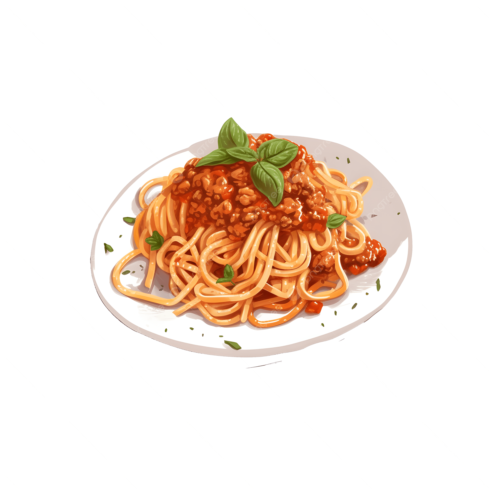

Home
Bolognese

Description
Bolognese is a slowly cooked meat-based sauce.
Ingredients
- Beef mince
- Pancetta
- Dried pasta
- Onion
- Carrot
- Celery stick
- Garlic cloves
- Tomato paste
- Tomato sauce
- Red wine
- Beef stock
- Oil
- Salt and pepper
- Dried aromatic herbs
Steps
-
Heat a large Dutch oven over medium heat. Add a little bit of oil and add the pancetta while the pot is still cold.
Cook the pancetta until it is crispy and the fat has rendered.
Transfer the pancetta to a bowl and set aside.
-
Cook the beef mince in the rendered pancetta fat until deeply browned, with some caramelised bits.
Once browned, transfer the beef into the same bowl as the pancetta.
-
Add a little more oil to the pot, then add the diced onions, carrots, celery, and garlic.
Cook until the vegetables have softened and become translucent.
Stir in the tomato paste and cook for a few minutes to develop its flavour before adding the tomato sauce.
-
Return the meat back to the pot, then add the wine and beef stock.
Stir well and bring to a simmer before adding the dried aromatic herbs.
-
Once bubbling, reduce the heat to low and let the sauce gently simmer.
Cover the dutch oven with a lid and let it simmer for at least 1hr, or until the sauce has thickened.
-
When you are ready to cook the pasta, heat some water in a large pan.
Once bubbling add the pasta and cook until it is al dente.
-
Once the pasta is cooked, drain and serve with the Bolognese sauce to your liking.
If the sauce is too thick, stir in a little reserved pasta water.